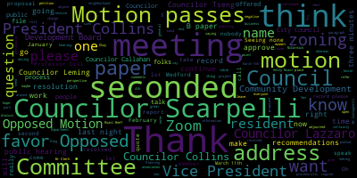
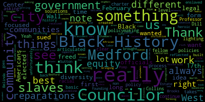
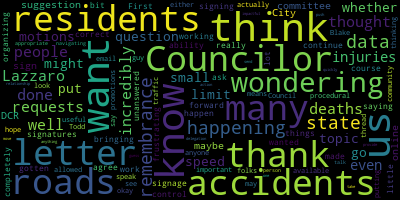
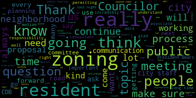
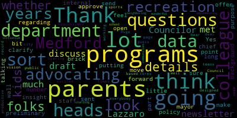

AI-generated transcript of City Council 02-11-25
English | español | português | 中国人 | kreyol ayisyen | tiếng việt | ខ្មែរ | русский | عربي | 한국인
Back to all transcripts
[Bears]: Third regular meeting, Medford City Council, February 11, 2025, is called to order. Mr. Clerk, please call the roll.
[Hurtubise]: Councilor Callahan. Vice President Collins. Councilor Lazzaro. Councilor Leming. Councilor Scarpelli. Councilor Tseng. President Bears.
[Bears]: Present. So President Adkins, please rise and salute the flag. Announcements, accolades, remembrances, reports, and records. 25022 offered by Councilor Lazzaro, Councilor Tseng, and President Bears. Be it resolved that the Medford City Council acknowledge and celebrate Black History Month. Councilor Lazzaro.
[Lazzaro]: Thank you. Happy Black History Month to everybody. I wanted to read a couple of segments of some emails that I received this month honoring Black History Month. These were both emails that were sent to me by influential black women, and I thought they were the most appropriate things to read to celebrate Black History Month. The first is by Andrea Campbell, Massachusetts' first black woman to be elected to a statewide office, our current Attorney General. quote, Massachusetts is home to the movements that pushed this country to live up to its promises of freedom and equality for all of its citizens. Frederick Douglass started the abolition movement here in Massachusetts, and let's not forget Dr. King and Coretta Scott met as college students in Boston. While the work is far from over, I'm proud of the progress we've made. It's now up to us to fight to defend and advance the wins of our civil rights heroes. The second thing I'd like to read is from an email sent out by Frances Nwaje, Medford's very own Director of Diversity, Equity and Inclusion. Frances sends out emails to city employees about various events and days of celebration, giving great history and background, and they're always a really great read. She says the National Observance of Black History Month is itself a fairly recent reality in the United States, and it was not immediately met with widespread reception. Its history begins with famous historian Carter G. Woodson and the Association for the Study of Negro Life and History in 1926. In honor of the birthdays of Frederick Douglass on February 14th, and President Abraham Lincoln on February 12th, two of the most important people for black American history, Woodson proclaimed the second week of February to be observed as Negro History Week. The main focus of this observance was to encourage the teaching of black American history in educational institutes, particularly at the primary level. The overall reception was lukewarm, but the departments of education of Delaware, North Carolina and West Virginia were very cooperative and Woodson considered it a success. After this, the idea for Black History Month was promoted by black students and educators at Kent State University in February, 1969, followed by the first celebration of Black History Month on campus and local surroundings one year later. Six years later, Black History Month was being widely celebrated across the country, not only in schools, colleges, and community centers. In 1976, in conjunction with the U.S. Bicentennial, President Gerald Ford praised Black History Month, urging all citizens to seize the opportunity to honor the too often neglected, accomplishments of black Americans in every area of endeavor throughout our history. I just want to thank Frances for sharing some information with city employees and for all her work. And I want to acknowledge the valuable work of her department and similar departments across Medford and encourage them to continue their work. We're really grateful for that. Black History Month hasn't really even been around for that long, so it's just important that we continue to celebrate it, and I'm glad to be a part of that and a part of that for Medford. So, thank you.
[Bears]: Thank you, Councilor Lazzaro. Councilor Tseng.
[Tseng]: Thank you. Black History in Medford goes back a long, long time to the founding of our city when very unfortunately, slaves were brought here to work in Medford. We see from at the Brooks Estate, we have Pomp's Wall, a wall that was created that was built by an enslaved man. We see that that black history reflected in the heroic work of Belinda Sutton. who successfully sued, took the initiative and sued for her rights to reparations and received those reparations, forming the first known legal case in North America when it came to freed slaves, getting reparations for their time as slaves, and setting a legal guideline, a baseline for the rights of freed slaves. This history continues through the last few centuries, we have the our historical black community and West Bedford who form such a rich tapestry of our life here in Medford mass. the work of the West Medford Community Center and uplifting that community and bringing us all together and making sure that Black history isn't just something that we tokenize and something that we shove into a corner, but that Black history is something that we all celebrate and recognize. And on that note, I do also want to note that our city on February 17th, Monday, February 17th, 2025, that's President's Day, I believe, From 1030 to 1.30pm in these chambers, we will have a celebration for Black History Month focused on African Americans and labor. And that event is also in conjunction with the West Medford Community Center. I also wanted to note, I think it's the elephant in the room, the attacks on diversity happening nationally and from the federal government in particular, trying to wipe away, erase, delete the idea of black history, the idea that of the histories and struggles of different ethnic groups in this country who all form what we all are, our story as Americans here. I've been glad to talk to neighbors about this, to hear from different elected officials across the city and different offices about our commitment to diversity, to equity, and to inclusion, particularly in our policymaking process. Considering racial equity in policymaking is something that's really complex. something that's really nuanced, something that doesn't always you know the the policy that is the best for racial equity doesn't always seem like it at first and the easy solutions aren't always the best solutions. And I think it's incumbent upon all of us as elected officials as policymakers in the city to ask critically, what, what are our oppressed communities, our marginalized communities, our black communities, feeling, what are they seeing? What are they experiencing? And how can the policies we write and establish, the policies that we pass through the city council best address those needs? And that takes a lot of listening, and it takes a lot of criticism and critical thinking. So I wanted to thank my fellow Councilors for co-sponsoring this resolution.
[Bears]: Thank you, Councilor Tseng. Any further comments by members of the Council? Seeing none, is there anyone from the public who'd like to speak on this resolution? Seeing none, just as a co-sponsor, I want to thank my colleagues for putting this on the agenda. Thank the city for continuing to stand up for the values that we hold of diversity, equity, and inclusion and representing everyone here. I want to thank both of my fellow Councilors for lifting up voices of folks who are speaking out against what's happening right now and lifting up the nuance of what good policy work to address a history of racial injustice looks like in this country. And I think, you know, something we can all remember and it's important for us to remember is the radicalism of the civil rights leaders who ended 100 years of functionally slavery and oppression from the end of the Civil War through the 1960s. And we often hear sanitized and sparkled up quotes, but I think especially at this moment, a quote from Dr. King from his speech, remaining awake for a great revolution speaks to this moment that we're in as a country. Let nobody give you the impression that the problem of racial injustice will work itself out. Let nobody give you the impression that only time will solve the problem. That is a myth and it is a myth because time is neutral. It can be used either constructively or destructively. And I'm absolutely convinced that the people of ill will in our nation, the extreme rightists, the forces committed to negative ends have used time much more effectively than the people of goodwill. And sadly, I think we're seeing that right now. Any further discussion? Seeing none on the motion, Mr. Clerk, On the motion, all those in favor? Opposed? Motion passes. 25024 offered by Councilor Lazzaro, a resolution in remembrance of Dan Dill. Dan Dill was a professor of chemistry at Boston University for 50 years, publishing 78 academic research papers with particular interest in, quote, making quantum aspects of the world accessible to general chemistry students, end quote. That quote is from his personal reflections on his career upon his retirement in 2023. Professor Dill was also an accomplished photographer, winning an award from Kodak in 2006. I encourage everyone to look at his website. His work is beautiful, www.dandillphotography.com. On December 4th, 2024, Professor Dill was walking his dog in a crosswalk across Mystic Valley Parkway near his home in West Medford. He was struck by a car and critically injured. Professor Dill passed away from his injuries on January 11th, 2025. His neighbors and friends, have banded together to lobby for changes to the traffic patterns and the greater traffic enforcement on that road, which is controlled by the Massachusetts Department of Conservation and Recreation. Apologies. Be it hereby resolved that the Bedford City Council share our deepest condolences of Professor Dill's family and loved ones, express our hope that this senseless tragedy will not be in vain and will not be repeated. Be it further resolved that the City Council work with DCR and our state delegation to make improvements to the crosswalk where Professor Dill was killed. Council is adjourned.
[Lazzaro]: Thank you. Professor Dill was not somebody that I knew personally, but somebody who was frequently outside, frequently spent time in nature, spent a long time mentoring and nurturing his students at Boston University. I went to Boston University. I also I went to Boston University as an undergrad and a graduate student, and I worked there as a professional. But I didn't know Dan, but I lived in his town and I live in his neighborhood. And he went out and walked his dog and he got hit by a car in a crosswalk. And because the road that he was walking on is managed not by the city of Medford, but by a state department, it's often very frustrating to try to make changes to the infrastructure. that would make it safer for people to walk there. To the point that it seems like nothing can be fixed. There are some things that you can do to roadways to make it safer for people to walk for pedestrians. You can make the crosswalks elevated. You can make speed humps. You can put flashing signs up. But since it's the Department of Conservation and Recreation, which is basically parks and rec for the whole state. They're not like the highway administration. They don't have that much money. It's, it often feels like you can't do anything. There are a group of neighbors that have gathered together. There's an attachment in the packet of a letter that was written by this group of neighbors and signed by a large number of them who live in the neighborhood that Professor Dill lived in. And they are asking for changes to be made to this rotary and that strip of road so that people won't drive so fast on it and it won't be so dangerous for people to walk their dogs. And I think that one thing that we should pay attention to as a city council is what we can do as elected officials and what our mandate is as representatives of our neighbors. This happened, Dan was hit in December, he died in January. I think a week and a half ago, somebody else got hit in the rotary that's right outside this building and died. another man in his 70s who was walking across a crosswalk in a rotary. I don't understand why people in Medford will be angry about all kinds of things. And this is life and death, and people are routinely getting hit by cars and dying. And I don't understand what could be more critical and more urgent than making a speed bump or a flashing sign and putting it up and making the road safer. Cars have become very safe for the people inside the cars. They've become very dangerous for the people who are walking on sidewalks and crosswalks. I can share one piece of information, which is that our state delegation has been working with DCR, attempting to meet with DCR. They did meet today. Representative Garbally told me today that they met. He didn't tell me what was discussed, but he said that they're making progress. I'm hopeful that that means that we can at least have an elevated crosswalk. I think that There are a number of requests, safety requests, speed warning signs for the crosswalk, rotary striping, speed enforcement by state police. I would also prefer to have a uh, committee meeting with the Medford Police Department and the state police. We have a state police barracks that's located in the Wellington neighborhood in Medford where I think we could, um, just have an open discussion about, like, how enforcement is carried out by the state police versus Medford police. I don't completely understand who is in charge of enforcement in which of the city. I've learned a lot from talking to people who are activists and advocates for these kind of changes. And the roads that are Medford roads exclusively, that Medford's in charge of enforcement, that is Medford police. um, jurisdiction. But when it's a road that is a state road, it's the state police is in charge of it. It's just everything is somebody else's responsibility. It's very frustrating. Um, it's especially frustrating for family members and neighbors who are concerned, um, people who have lost somebody. Uh, and, um, I think we should all, um, be fighting as hard as we can to try to prevent this from happening. And when we talk about it, we say, somebody shouldn't have to die for things to change, but then people do die and they still don't change. And then another person dies and they still don't change. And it's infuriating.
[Bears]: And that's all, thank you. Thank you, Dr. Lazzaro. Councilor Kelly here.
[Callahan]: Thank you. First, I really want to thank Councilor Lazzaro, of course, for bringing this forward and working with residents. I do want to thank the residents. Their letter is incredibly well thought out. The requests they have made are well thought out. They have gotten many, many, many signatures for people signing on to this. So they've done a lot of organizing work. I think, and I completely agree with Councilor Lazzaro that it is, incredibly frustrating that deaths, injuries, accidents continue to happen, and we do not have the ability to have the control that our residents would like us to have over these roads. You know, even just in the question of like whether signage is put up saying what the speed limit is the correct speed limit so you know even small things small requests go unanswered. I wanted to ask a little bit of a procedural question I hope it's okay. This is by no means to not say that this is an important topic but. Is it actually allowed for motions to be put in remembrances, and I'm only wondering because I think there may be people in the community who would want to know about this and might want to speak on this topic but they wouldn't look in remembrances for promotions that are happening. And my only suggestion, like I've been thinking about whether. It would be useful. I know there's been an email thread with more data about the state roads and accidents happening there. There is data online that we can see about injuries, deaths, accidents happening on the state roads. That data is available to us online. And I was wondering if we might think about putting this either in a committee to then go to City Council, but having Todd Blake, who's our traffic guy or anyone else that that folks think is the appropriate person to talk to us about navigating our relationship with DCR and what we can maybe provide, is there anything that we can do to push DCR to take action more quickly? So I guess there's, like, should we move this to committee? Can these motions be done in a remembrance? And then... I had one other suggestion, which is wondering if city councilors can sign on to this letter, if that would be more impactful for us also to sign on to the letter to maybe send to our state delegation.
[Bears]: Thank you, Councilor Callahan. I think just from a procedural perspective, if we wanted to divide the question between the two paragraphs and send the second paragraph to committee. That would be procedurally fine. I'm also in conversation with the Bike Commission and hoping to engage members of WOC-Mentford to have folks down to talk about the updates to the citywide Bicycle plan and also the general road safety needs. Um And maybe even moving towards adopting a vision zero policy. I think there's also the side of enforcement. I don't know if those should be one meeting or two meetings. Um or one really big meeting, but I think if we refer this, and my preference would be if we would refer that to Committee of the Whole, my hope would be, my hope in working with the Bicycle Commission and other advocates would be to have that in Committee of the Whole. Right. Yes. Council Lizard, do you have anything? Are you amenable to turning the second paragraph of the resolution into a B paper and referring that to Committee of the Whole?
[Lazzaro]: Yes, I'm comfortable with that. I do think that enforcement and roadway changes are two different things. But I think a larger conversation about traffic safety in Medford is definitely in order. And I think maybe if everybody came together in one conversation that wasn't that's a great idea. I don't know if that was. Accusatory or that just was everybody trying to come being on the same team trying to come together to solve the problem that everybody agrees. Is everyone's problem is. A great idea.
[Collins]: Thank you, President Bears. I just wanted to thank Councilor Lazzaro for putting this forward. And I know that Councilor Lazzaro and President Bears in particular, among other councilors, have been in very close contact with this neighborhood coalition that has been organizing in the wake of Professor Dill's untimely death. So thank you to you for that work. And thank you to the residents for organizing in the wake of this tragedy. It's hard to find words for something like this. I want the residents to know that we share in your grief, and it's just so hard to. As residents of the city, as residents of most cities, as representatives of any city, this is something that we have to fathom because it happens all of the time. I don't think it's at all an exaggeration to say that roads in America are paved in tragedy. It has incredibly normalized the level of road violence that we all have to live with and grieve from. And as a representative, it fills me with just disbelief and fury that municipalities like ours are so hamstrung when it comes to the level of discretion and capacity and resources that we are allowed to have because of how funding is allocated from our federal and state partners. and how hamstrung we are and things that we have to bottom line as a city, leaving us so disempowered to do the type of improvements that residents have been begging us to do for years. We need substantial, radical road redesign on most roads in Medford if they are going to be livable for the people that walk on them and bike on them and roll on them and drive on them. And if it was possible for us to do that amid our other statutory responsibilities, I think we would have done that. going to say, 50 years ago. And because we, for many reasons, could not, and for other reasons, would not, people continue to die. And so it's with this perspective that we have to go forward and use the levers that we have at our disposal. I'm really, really grateful to every resident who has been calling on us to meet with our delegation and with partners at DCR as often as possible to say, It is insane that this is normal. It is national gaslighting that people are supposed to just get over, people dying on roads. I think this is another incredibly sad example of how governments are not given the tools to kind of compete with the pace of technological advancement. Cars are getting bigger and bigger and bigger and bigger and faster. Roads are not changing. Municipalities are not given more tools to address this problem. And people keep dying. I don't really know how to wrap it up. It just never should have happened. And we have to keep working together until it stops happening. So again, thank you to the residents and to Professor Dill's family. We're very deep in sympathy for your loss.
[Tseng]: Councilor Tseng. Councilor Collins said, you know, she doesn't know how to wrap it up. I don't know where to start. I am going to be brief because I think my fellow Councilors have really articulated the frustration, the exasperation, the us asking over and over again for really basic things from the state government. And, you know, I mean I think this is a really really clear example of, you know, a field where we keep asking for improvements, even for basic things like additional signs, clear lighting, fixing lighting, you know, a lot of the things that are talked about in the letter that Councilors are mentioned, and yet, nothing, and I it's just, I I think we can all agree that safety is the bedrock of what the government should be doing like that's the reason we organize ourselves into a society and have a government right like. this level of inaction and as as Councilor Collins put it, the gaslighting that we've had to say that you know we should just accept things like this is just mind boggling and it's really nonsensical. Um, I, when it comes to the policy I'll just leave it there because I think, you know, I feel very strongly about it, and I think that's been articulated. I did also want to thank Councilor Lazzaro from a personal level, including the link to Professor Dill's photography. It was really touching to see the website and to see the really, really beautiful art that he was creating when he was with us here. Yeah, and to lose that is such a loss. I have no words for it. It's really tough. So I'm sending my deepest condolences to Professor Dill to his family as well. Or to, yeah.
[Bears]: Thank you, Councilor Tseng. On the B paper, which is the, oh. Oh, on Zoom. I will go to Mr. Castagnetti on Zoom. Mr. Castagnetti, name and address for the record. You have three minutes. Mister Cassidy? Someone here wants to talk? Okay, great. We'll try to come back to you. If you would like to speak on this resolution, please come to the podium. Name and address for the record, please.
[SPEAKER_06]: Hello, my name is Allison Leach, and I live at 1522 Mystic Valley Parkway. And I am speaking on behalf of several neighbors today. My neighbors, Martha Andres, Vanessa Fox, Cecil Dorman, Justin Cole, and many others. Thank you, President Bears, city council members, and especially Councilor Lazzaro for introducing the resolution and remembrance of my neighbor, Dr. Dan Dill. and thank you also for the opportunity to speak here today. I live just down the street from the crosswalk where Dan and his dog, Blue, were hit by a car. That morning was like any other for them. They took a morning walk every day, and they crossed the street at the only crosswalk that we have on our stretch of road. And he had even trained his dog, Blue, to sit and look both ways before crossing the road. Tragically, on December 4th, Dr. Dan Dill and his dog were hit by a car, and on January 11th, Dan passed away from his injuries. Thankfully, his dog Lou is expected to make a full recovery. My neighbors and I were devastated to hear that Dan was hit and his dog were hit by a car. But sadly, we were not surprised. We witnessed every day cars speeding up and down that road. And many of us have had those calls ourselves with distracted drivers and cars just simply going too fast. Dan's death was a senseless and truly avoidable tragedy. We believe that simple and common sense traffic safety measures would make our road safer for our community. We drafted a letter that has been referenced here today, and thank you all for reading it, to Brian Arrigo, Commissioner of DCR on January 14th, that listed traffic safety improvements for Mystic Valley Parkway. And our letter received over 70 signatures from concerned neighbors. That was with no formal organization, just word of mouth. Lots of folks are really concerned about this issue. We are looking forward to working with the council and with DCR to improve the safety of our roads for drivers, for cyclists, for pedestrians, and also for our four-legged friends. We are committed to ensuring that no other family suffers the same terrible loss that Dr. Dan Dill's family has endured. Thank you.
[Bears]: Thank you. Going to try Mr. Castagnetti on Zoom again. You have three minutes.
[Castagnetti]: Hello, am I on now?
[Bears]: You're on. Name and address for the record, please.
[Castagnetti]: Castagnetti, Cushman Street, East Medford, Mass. I'm very saddened to hear about these two deaths. I'm sure it was unavoidable. Since the city sends out a lot of reverse 911s, maybe to like, to like cover their mentality, they should send out a message to all the peoples saying, please use extreme common sense and look both ways and look all four ways, especially if you're walking a dog, because it's hard to get out of harm's way when you have an animal with you. All I can say is it's unnecessary. It should not happen. And I say my prayers. Good night.
[Bears]: We're going to go to Martha. Martha, name and address for the record, please. It's three minutes.
[Andrus]: Thank you. My name is Martha Andrus, and I live on Kilgore Avenue next to Mystic Valley Parkway. And I think I echo what's been said by Allie and Emily and other Councilors. I just want to say that What struck me, I was not surprised by this accident. I could see that crosswalk from my house, and I'm frankly afraid every time I cross it, even though I'm extremely careful. One thing that broke my heart was one of my neighbors saying, you know, I feel partly responsible because I fought for years to get that road fixed, and I just got tired and I gave up. And I feel responsible for Dan. I'm sorry. It shouldn't be on the citizens to get this done, but we are doing our very best to work with you, with our state delegation, with the city to get to move DCR forward. And we aren't going anywhere. We live there. So we're going to be there and continue working on it. Thank you.
[Bears]: Thank you. Any further discussion by members of the public on this resolution? Seeing none, on the B paper, which is the final paragraph of the resolution, all those in favor? Opposed? Motion passes. on the a paper by Council is our seconded by the paper seconded by Councilor Callahan a paper, also seconded by Councilor Callahan all those in favor. Opposed the motion passes. Thank you all. If we could all rise for a moment of silence. Thank you. Records, the records of the meeting of January 20th, 2025 were passed to Councilor Collins. Councilor Collins, how did you find those records?
[Collins]: I found them in order and I move for approval.
[Bears]: On the motion of Vice President Collins to approve, seconded by. Seconded by Councilor Lazzaro, all those in favor? Opposed? The motion passes. Reports of committees, 24-033 offered by Vice President Collins, Planning and Permitting Committee, January 29th, 2025. Councilor and Vice President Collins, how did you find the report?
[Collins]: I found it in order and I moved for approval. This was our second conversation on the neighborhood and urban residential zoning topic in planning and permitting, which we will meet on a couple more times this month.
[Bears]: Thank you. On the motion of Vice President Collins to approve the report of committees, seconded by? So my councils are all those in favor of those motion passes 24-354 and 25055 by Councilor let me resident services and public engagement committee January 29 2025 report to follow Councilor let me.
[Leming]: Thank you. We met to draft a newsletter. Thank you very much to Councilor Lazzaro for doing that. And we also to discuss some preliminary questions regarding the open data policy and sent to the mayor and chief of staff a number of questions to send out to department heads to clarify what sort of internal data department heads have. I would move to approve.
[Bears]: On the motion of Council, I mean to approve seconded by Councilor Tseng all this in favor. Opposed, the motion passes. 24-468, Governance Committee, February 4th, 2025.
Councilor Tseng.
[Tseng]: Thank you. We continue to meet on the charter review process. We reviewed a number of sections from the Charter Study Committee's recommendations, mostly focused around the executive branch, elections, and financial procedures administrative organization.
[Bears]: On the motion of Councilor Tseng to approve, seconded by. Seconded by Councilor Lazzaro. All those in favor? Opposed? Motion passes. 24492 and 24493 offered by Councilor Lazzaro. Sorry for the typo. Public Health and Community Safety Committee, February 4th, 2025. Councilor Lazzaro.
[Lazzaro]: This was a meeting to discuss an ordinance that Councilor Tseng drafted on a gender affirming care and reproductive health care. It is still pending legal review.
[Bears]: Um, I would move to approve on the motion to approve by councils are seconded by second by Councilor Collins. I was in favor of those motion passes. Hearings 24515 public hearing proposed amendments to the Medford zoning ordinance chapter 94 Salem Street neighborhood corridor district hearing to be continued to March 2025 pending recommendations from the Community Development Board. This is a we had noticed a public hearing jointly with the Medford Community Development Board on the proposed Mystic Avenue corridor zoning. The Community Development Board took up its public hearing on this, opened it on January 22nd, but it's continuing it to a future meeting. We don't have the recommendations, but because it was noticed, we should open it tonight. And once it's open, there should be a motion to continue to the March 11th meeting. So I'm going to declare the hearing open and recognize Vice President Collins.
[Collins]: Thank you, President Bears. I have a motion to continue to the March 11th meeting.
[Bears]: on the motion of Vice President Collins to continue the public hearing to the meeting of March 11th, 2025, seconded by Councilor Leming. Mr. Clerk, please call the roll.
[Hurtubise]: Councilor Callahan? Vice President Collins?
[Andrus]: Yes.
[Hurtubise]: Councilor Lazzaro? Yes. Councilor Leming? Yes. Councilor Scarpelli? Councilor Tseng? Yes. President Bears?
[Bears]: Yes. So the affirmative, negative, public hearing is continued to March 11th. Petitions, presentations and similar papers, 25025, petition for a common victor's license, Kelly's Roast Beef. We have multiple papers on file and I'll turn it over to Councilor Scarpelli.
[SPEAKER_15]: Thank you, Mr. President. Is the petitioner here this evening or on Zoom?
[Bears]: Is the petitioner from Kelly's Roast Beef here either in person or on Zoom? Please raise your hand on Zoom if you're present from Kelly's Roast Beef. I'm not seeing any hands and I'm not seeing a table on the motion to table to our next regular meeting by Councilor Scarpelli seconded by Councilor Leming. All those in favor. Opposed. Motion passes. 25-026 petition for a common victor license King Boba tea. get this open. We also have our various files in front of us, Councilor Scarpelli.
[SPEAKER_15]: We have a representative from Boba Tea, Mr. President.
[Bears]: A representative from King Boba Tea. Yes, please come to the podium.
[Scarpelli]: Welcome. I'm sorry. Thank you. We see everything in order, but before we move forward, do you have anything to say? I know that it seems like it's just a simple transfer. You're keeping the business the same, but just turning over the ownership? Is that what I see?
[SPEAKER_00]: Yes, but in the next couple of months, I will be changing the name.
[Scarpelli]: Okay, you'll be changing the name? Okay.
[SPEAKER_00]: Yes.
[Scarpelli]: All right, but it seems like the hours of operations don't change. You have everything in place. I see everything in order, Mr. President. Move forward approval and wish him good luck.
[Bears]: Could we just have your name and address for the record? Just state your name and give the address of the business.
[SPEAKER_00]: Oh, my name is Thao Vuong, and the home address or?
[Bears]: Oh, just the business address is fine.
[SPEAKER_00]: 454B Salem Street.
[Bears]: Thank you. Awesome. On the motion of Councilor Scarpelli to approve this petition, seconded by. Seconded by Councilor Leming. Mr. Clerk, please call the roll.
[Hurtubise]: Councilor Callahan, Vice President Collins, Councilor Lazzaro, Councilor Leming, Councilor Scarpelli. Yes. Councilor Tseng, President Bears.
[Bears]: Yes. I'm confirming that the negative of the motion passes. Good luck.
[Scarpelli]: Thank you. Thank you so much. Mr. President, if I can, just a quick update.
[Bears]: I know that- Councilor Scarpelli. Just- You're all set. Oh, here you go.
[Scarpelli]: Oh, sorry. I know the council had some suggestions a few weeks ago with our process when it comes to licensing. We had a great discussion with council being with some opportunities that other communities use in moving that forward. So I think that we have a few ideas that I know that council president's working to that we can. Look into the legalities and possibly streamline the processes so we can that the hope is that if maybe going to subcommittee and then talk about the process where it's either biweekly or is needed that we meet half hour before. City Council meetings in the side the resident would have to stay, the business owner would have to stay, but as we could see most of the time, we could streamline things and move them forward. So they're not paying attorney's fees and people staying here for an extra four hours. So I appreciate the council bringing the question forward and pushing this along with Councilor Beguin for his support and his guidance with this and look for something coming down the line. So thank you.
[Bears]: Thank you, Councilor Scarpelli. Councilor Lazzaro.
[Lazzaro]: That's great.
[Bears]: Great. Fantastic. All right. Motions, orders and resolutions. Do you want to take up the under suspension and refer it out now or on the motion of Councilor Scarpelli to suspend the rules to take paper under suspension, 25-027, seconded by? Seconded by Councilor Leming. All those in favor? Opposed? Motion passes. 25-027 offered by Councilor Scarpelli. Be it resolved that the Committee on Education and Culture schedule a meeting on February 25th, 2025 at 6 p.m. in the City Council Chambers. The Committee will discuss the needs of the Recreation Department for the upcoming budget season. Committee will also discuss recreational programs involving our disabled community. Councilor Scarpelli.
[Scarpelli]: Thank you, Mr. President. And thank you for Councilors Leming and Callahan, who actually started this process with some residents that were looking to increase programs for our disabled community and we had discussions with the parents. I've met with both directors from Medford and Malden, Somerville together starting a collaborative and a pilot program with the three communities, enhancing our programming for our disabled youth and adults. And as we went forward and looking what the needs are for the, as we move forward with this process, we realized that having a subcommittee for Education and Cultural Committee to focus on the true needs of what the Recreation Department needs coming to budget season and calling for that meeting hopefully on February 25th before our regular scheduled meeting and then meeting with the parents who I spoke with yesterday making sure that they understand the process and then possibly working to create a committee with the parents and gathering information to see what our community really needs and what they're looking for and working collaboratively with them. So hopefully we get to a resolution in February and we hope to have programs up and running by April 1st. So thank you, Mr. President.
[Bears]: Thank you, Councilor Scarpelli. Councilor Leming.
[Leming]: Yes, I'd like to thank my colleague for putting this forward. So to offer a little bit more insight into the background of this. So a lot of the parents who have been advocating for these programs have been doing so for years and years, and they haven't, I think at this point, a lot of them have just been advocating so long, they feel like they're talking to a brick wall. So part of the, purpose of this is to just make sure that everybody that the parents, Council, the city and Medford recreation are on the same page in terms of vision for what these programs look like and they're, it's, it's, a lot of details that like, well, I guess seem like details to the folks, to some folks, but a huge deal to the parents, like whether or not the programs are going to be designed for just kids or kids and teens, whether they're going to be sports based, what times are going to be. So I think the parents would just like some clarity with Medford recreation on what, on what that would look like. And it would be, productive to get these discussions on the public record. I also am excited to hear that my colleague is working with neighboring communities and implementing and starting up these sorts of after school programs. I think that's a wonderful initiative.
[Bears]: So thank you. Thank you, Councilor Leming, Vice President Collins.
[Collins]: Thank you, President Bears. Just wanted to thank my colleague for finding a date certain for a committee meeting on this topic and also to my fellow Councilors for working so much with this community in recent weeks. This is another issue that I know residents have been advocating for for a very long time. It's overdue for some attention and some funding. So I am really glad to see the urgency around this. Thank you. I look forward to working with you all on this.
[Bears]: Thank you. On the motion of Councilor Scarpelli to refer to the Committee on Education and Culture for a meeting on February 25th, seconded by. Seconded by Councilor Leming. All those in favor? Opposed? Motion passes. 25-023, whereas this member of the Council has received, offered by Councilor Scarpelli, whereas this member of the Council has received multiple calls and emails requesting information regarding communication processes informing residents on the topic of zoning. And whereas residents have questions about where to locate meeting minutes and information dealing with the zoning process, and whereas the zoning process moving at a rapid pace and residents are questioning if there's a deadline to complete rezoning, be it resolved that the city council discuss the zoning process. Councilor Scarpelli.
[Scarpelli]: Mr. President, I know that yesterday there was a community meeting for the Salem Street neighbors in the community at the Roberts and people that were there really got to share some of their I don't wanna use, you can use frustration would be a good word. I think that I don't wanna beat a dead horse and I don't want to keep bringing this up, but I think we have to. I think that one thing that's been coming back and forth is that understanding the zoning when it comes to posting information and what is coming up in future meetings. And I know that for a Councilor or zoning specialists, it's easy because it's in your pipeline and you are accustomed to the language and you can really understand it. But I asked a while back if we could, you really work with our consultant to try to find a way that we can, I don't wanna say, probably just a layman's terms, so people can understand the zoning and with better verbiage. So it's not so complicated. I know that yesterday's frustration, as I talked to neighbors this morning, as I talked to neighbors last night, residents last night, I think the biggest concern is really the speed and the process where last night was impressive in the fact that at least they saw what was going on in person. They got to touch things see things, and then they got to go to those boards and post what they wanted to see. And I think this is something again that I brought up for years now, and I can revert back to previous council. When we looked into doing the RFP process, working with the RFP process is really as it was written back in the day. And I think I showed the council that the minutes that those meetings. that the RFP asked for the consultant that we were bringing in, the partners were bringing in to really have a detailed plan that would go into the neighborhood for communication and having the neighbors feel as part of the process and share the input as you get started. Now, last night's efforts were great, but that's what we were talking about that we do at the beginning. and as we're moving forward the process I and believe me I understand what my council has been saying we've had over 20 some odd meetings and and and the word is we've tried to get the word out but unfortunately when we have the issues that have come about on Salem Street and the lack of what our residents feel like they're not being listened to. I think it's important that we listen. And so I would make a motion that we would ask to, you know, I know that we halted the meeting for March, but I would actually ask to suspend that for another month and maybe go back to that court or go back to the Roberts bring meetings in and just reset the clock with that. Not where it's coming in and people telling me how wrong it is or how bad this is, but just resetting and understanding and having that open process before we go to the next step and say, hey, this is more in depth and this is what we've been asking for, to really understand what we want in the corridor, as they should say. I know some neighbors say it's not a corridor, it's in their neighborhood. I think it's important if we can do that because I, again, because as I follow it up, I don't see a timeline. I don't think there is a timeline. I know that we've been waiting a long time and I know that this council and people have worked really hard and I don't want to discredit that. Please believe me. But I think, especially when we talk about the Salem Street Corridor, it seems like it's a lightning rod right now. And it's created such a negative buzz that if there's a way that this council can lead in working with Ennis and working with Ms. Hunt's office and try to find a more robust way to go back into that neighborhood and sit down and listen and post. I think because that's what we did yesterday, a lot of people did feel comfortable with posting and seeing that, you know, they could put something on a board and understand what that's about. So I think that Resetting that giving a little bit more time I think it'll be, it will be so important for healing, and it'll be very important to moving forward in this community as we go through this process because I This isn't a meeting to say I told you so. I don't want to say that but I just think that it's important that we listen because this hasn't been touched in many, many years and we know that. And there was comment yesterday that was made by Ms. Hunt that she said that during this meeting she thought that everybody was there that was against zoning. And the truth of the matter is the people that I've talked to, they weren't against zoning. they were against the process of the zoning hearings and how it's gone through and how they feel like they weren't heard. Because something simple, and you were there, Council President, the simple piece of the biggest, one of the biggest fear we heard was that the methanol clinics and trying to avoid putting medical buildings in that corridor to avoid the concerns that neighborhood had. And that's something we can revisit if it was started from the beginning. And it wasn't, you know, there were some people that were upset that, you know, the size of the buildings, but I think the messaging was a lot clearer that people understand where, what's gonna go where and where, some stories going to go six stories. There was clarification on some map changes that we saw that really clarified and help people. But I think that if we could, if we can, if there's one thing that I would ask as form of motion is if we can see if we can just delay the process and hold a a meeting at the Roberts with the neighbors that would be a listening session and more of a partnership to see what do the neighbors want, not a negative or antagonistic battle with their side, our side, but sit there and present it the way that, and has presented it in the sense that allowed the people to get up talk to people in person to sit there and tangible and put a sticky on the on the note on the board and say, this is what I want. So I think it's important because I think that no matter how much work and people have done a lot of work I'm not going to, I'm not going to deny that that there are a lot of people doing a lot of work and spend a lot of time But I think that it's important that we understand as a council that the residents don't feel like they're being listened to. And it's not meant to be a disrespectful comment. It's really made to enlighten us to say, hey, nothing's happened yet. We don't have to rush for anything. Let's reset this. Let's go into that corridor and let's become partners with the neighbors of Salem Street and put everything on the table and understand as we move forward, there was nothing that we pushed through or you leave all the negativity behind and say, we did this the way we should have done it. And I think it's important because I, again, I've done that and I've talked to a lot of professionals that have talked about this process and other communities as professionals, whether they're zoning consultants, attorneys, or worked for different municipalities. this is the difference with what we've done so far and where the gaps are and where the cries are from the community. So again, I appreciate the time to listen. I know that in totality, I think that's probably the biggest thing that I've heard. I know that last night's meeting kind of answered some things, but I think the two biggest things that if we can come out of it is if there's a way that we could possibly work with our consultants to try to find a way to simplify. what those changes are and what we're really doing in those corridors. So it's not these maps that are real tiny so people can understand them a little bit better and just bullets where I hate to say it. Someone said to me, yes, this is Georgia. I'm 78 years old, and I just don't understand all this. This is so confusing to me. What does this mean for my house and my future here in Metroton? I couldn't answer them because it's specific to the area. between that and the speed of the process, and maybe asking to do a little bit more teamwork with the neighbors, I think would go a long way for both this council and our vision together. Because again, it's not that people in the room were against everything. They weren't. It was the pace and not understanding the fear, I think, that was something we need to correct if we could.
[SPEAKER_15]: So thank you, Mr. President.
[Bears]: Thank you. I just want to give my perspective on the meeting last night and talk about procedurally the ideas that you're talking about. But I just wanted to say that I think It's a pretty general truism that when government does something right. Nobody complains, nobody talks about it and nobody gets any credit for it. And when government does something wrong, you have a lot of conversations about how it could have been better and how to make it better. And I think that's been my experience of this larger project so far. This is the fourth major change that we've done as part of the project, but it's the first one where we had residents so clearly and vociferously frustrated by elements of the process. And I think that we have done significant work to try to respond to that. And last night's meeting was a part of that. I'm going to leave it to Councilor Collins to talk about some of the other work that we're doing. I think very much along the lines of what you just mentioned Councilor Scarpelli around bullet points and breaking this down and getting nuggets out there. I know Councilor Collins has more on that. We were there till about 10 last night. you know, most folks had left at that point, but the, I know, you know, Councilor Scarpelli, Rep Donato and about maybe half to three quarters of the crowd had something they needed to do other than talk about zoning for three and a half hours. But we did manage to answer every question of everyone who stuck around. And I think, you know, certainly there are people who walked in with opinions and feelings who left with the same opinions and feelings about the zoning. But I think we also did do some significant work as Councilor Scarpelli noted to break down the information, provide a little bit more of a visual guide for folks who had concerns, address some of the statements and comments that had been made. I know one of the big ones was around, oh, 15 stories and some, you know, there's going to be these loopholes. And we actually really were able to dive down directly with a couple of folks who had really been concerned about that and show them that actually the thing that they're worried about is the zoning we have now and not the zoning that's being proposed. And that was really reassuring, I think. Maybe not on the totality of this. I'm not saying those people agree that this new proposal is the best thing in the world now. But on that specific issue, we were really able to address that. It was, I think, a productive evening for the most part. I've received a bunch of communications today thanking the Council and the Planning Department and Innes Associates for their work to put that together. And I think just moving to the procedural perspective, we've continued the public hearing to March 11th. If we don't have the recommendations from the Community Development Board, which is meeting the week before at March 5th, I certainly would support again, a continuance of the meeting further but that's how we would, we can't make a motion now to continue a public hearing that we just voted to continue to another date. So, if we want to make a motion to further push that meeting out. We would do that when we reopen the public hearing. And I just also. Personally want to note that I think a lot of residents we were very clear with residents last night who are highly involved and engaged about the process going forward. And personally, I would like to let the planning department, and as associates take all the comments and notes and questions. that were raised by residents last night, but also at prior meetings via email, via the input submission process. There were also some residents who were waiting on some questions to be answered, because I think that's going to inform the set of recommendations they make to the Community Development Board. And we really did say to folks last night, the next opportunity to engage on this is Community Development Board on March 5th. If the recommendations that associates proposes and planning development, sustainability propose address a lot of these concerns about uses that we're talking about, medical uses, short-term housing uses, some of the questions that people had and that the community development board feels comfortable making its recommendations to the council at the March 5th meeting, then we could consider that on March 11th. And if we feel that we should extend as Councilor Scarpelli noted, I think that would be the time to make that call. But of course, if the Community Development Board continues for another after March 5th and we don't have recommendations from them, I think we would continue. So I'm trying to speak to what you're saying Councilor Scarpelli in terms of the intent I agree with you if there's still a lot of if we have certainly if we don't have recommendations and community development board feels they need more time to spend on it. But I think we should continue further down the line. And, but I just want to be procedurally of note to say We told a lot of people last night how things were going to go, and I don't want to change that up on them personally right now. I think we can make that decision when we get to the decision point in March. Vice President Collins.
[Collins]: Thank you, President Bears. I also want to yeah, thank you, Councilor Scarpelli for bringing up this topic, we talked about this so often in the planning and permitting committee and I think it's really good to have the chance to talk about this to a wider audience in a regular meeting. Also want to thank President Bears for facilitating at the Salem Street quarter q amp a last night and to all the elected to attended and especially to city staff and associates for staying quite late to make sure that everybody's questions were answered. Truly, truly appreciate that. So we have, like I said, I'm really glad that we're talking about this. I appreciate President Bears' framing that this is, you know, by no means the first topic in the zoning, the citywide zoning process. And I think as we've been going along, we've been learning. I, well, just to speak for myself, I have been learning a lot, not only about the zoning, I have learned so much about zoning through getting, through being required to get really, really into the weeds on it. But it has also been really critical to note what questions people have about what we started with phase one, we moved on to Mystic Ave corridor district, we moved on to Green Score. Green Score is kind of now closest to finalization of the topics that haven't yet been ordained. And Salem Street, its next procedural step is the CDB. And with each of these proposals, we learn more about what is interesting to people, what is confusing to people, Do we hear from not very many residents about what do we hear from a lot of residents about. And that gives us what I think is incredibly crucial and valuable information about how we need to be responding to those questions in our public facing communications. And we have been trying to really, you know, just sprint as fast as we can being responsive to that, while we are continuing this process of reviewing the whole zoning citywide, I really do think it is important that we you know, stay true to our promise to review zoning comprehensively this term. That's not like kind of getting into any timeline specifics, but just I do think it's incredibly vital to do that as a package because with zoning, if we were to end up with kind of a incomplete overhaul, having touched some quarters, but not others, some neighborhoods, but not others, some topics, but not others, that would create a really chaotic legal landscape for developers for residents for city staff. That's just, I don't think that we run the risk of getting into that kind of situation but that is that is kind of an overarching goal guiding this process that we have to make sure that at the end of this project, the zoning, quote unquote, agrees with itself so that we avoid any legal chaos that could come from having tables of uses that don't line up or neighborhood uses that are not compatible with other neighborhoods. Right now, we have no intention of singling out any neighborhood and we have to make sure that we proceed at a pace that allows us to stay true to that. Anyway, back to the stuff that I honestly really love talking about.
[Bears]: Vice President Collins, just one other note. We did accept a proposal and that proposal has a time frame on it. You know, we've had the timeline that we've been on since last spring because the proposal is essentially to complete the introduction of major changes by the end of June and the cleanup by September, and that's based on the proposal that the council and city accepted for this project.
[Collins]: Right. Thank you. No, I appreciate you noting that of course we are associates is not an employee of the city, so we have to use them while they are available. I think on that point, it's also important to note that our zoning consultant has already, I would say, just speaking only for myself here, quite magnanimously gone beyond the scope of what we are paying them to do. I think that this work is necessary. I think it's really valuable. We're gonna work with them to make sure that we can continue layering more public feedback, public participation, additional opportunities for public participation beyond all of our existing public committee and public hearing. meetings that are baked into this process as a minimum. I'm really grateful to them for doing that. We want to make sure that they continue to have capacity to do public Q and A's for every zoning topic, not just Salem Street going forward. We've been working with them so that they can, for all zoning topics going forward, in addition to some other comm stuff that I'll talk about in just a minute, put out really short bite-sized, like two-minute explainer videos for each zoning topic, which I think will be really, really useful. Because reading about zoning is incredibly dry. So things like that I think will add a lot to the process for residents. But at the end of the day, we are still working with a consultant under the constraints of a contract. And that is a real constraint. So we've talked about this a little bit in the planning and permitting committee, but I thought it was just really salient what the Councilor said about residents noting, you know, that we need to, we need really, residents need help in simplifying what changes are proposed, what is proposed to change in the corridors and the neighborhoods that we're looking at. You mentioned bullet points, you know, my ears pricked up. When I heard that because so much of what I've been working on, you know, quite intensively for the past few weeks at this point is really at the same time as we're comprehensively reviewing the city zoning. I personally have been comprehensively overhauling the city zoning website. And the thing is, we really need we really need bullet points we really need diagrams. for myself as an individual reading a zoning proposal alone, I do not come away with it with a deep enough understanding of the zoning proposal that I can easily explain it to another person in a way that they can understand. and residents do not have the time and the responsibility that Councilors do to do that kind of deep dive. So I met with the mayor's communications director and communications associate actually just earlier this afternoon. We are getting really close on an overhauled version of the zoning webpage. And that is really built around having simplified summaries and bullet points for every single zoning proposal, the ones that are currently going on, the ones that have already been adopted so that it is completely unmissable for residents. What is this? What are you talking about? Explain it to me like I'm in fifth grade. When is the next meeting? What topic comes after this one? What does the zoning currently say? What can I do by right? What does by right mean? Under the proposed zoning, what would change, what would be doable by right under that new scenario, what would be different, answering frequently asked questions, including diagrams, because I think those are totally essential for understanding. There's a lot of things that really don't come across in text, even when the text is simplified. We will add those short explainer videos when they are available. I just think it's really important that we are trying to optimize every communication strategy that we have. I think that adding in a public Q and A for each topic is such a great idea. And I really want to extend my thanks to Councilor Scarpelli for beating that drum for a long time. And I'm really glad that that's going to be a part of every zoning topic going forward. In addition, the short form explainer videos, in addition, a city websites that people have a spot that they can go to, which I really don't think they had before, where they can just get oriented. What is this? When are they going to talk about it next? just give me a version of this that I can digest and I can understand it well enough that I can ask a question and let people know where they can go to ask a question who to email for reliable information and when the next public meeting is so that you and your neighbors can attend and get your get your questions answered and real time. So I am really excited for us to be onboarding all of that. And, you know, that's our responsibility to make sure that residents, it's our responsibility to pass here. First and foremost, I believe that it is our responsibility to update Medford zoning because residents have been asking us to do that for a very, very, very long time. And I know that there are a lot of Metro residents and business owners and local developers who have been very, very frustrated for a very, very long time, seeing neighborhoods not reflect the character that residents would like them to, seeing squares and areas with a lot of great commercial potential not reach their full potential, because we have not undertaken this project. We owe them thoughtful zoning, reasonable zoning, better zoning. And I feel really, really committed to delivering on that goal. And at the same time, we also owe residents good, reliable information that residents can understand without becoming zoning experts. And that has been my focus for the past month in collaboration with my fellow councilors and with city staff and with Innes Associates. I am really glad that last night's Q&A answered so many questions. We're going to continue doing that. All of our public meetings, the planning and permitting meetings, the CDB public hearings, the City Council regular meetings are always public and always forums where residents can ask questions and get their questions answered. We're going to continue to do that. We're going to continue to use all of the communications channels that are available to us as city councilors and in collaboration with the mayor's office to do our very best at making sure that people know about this topic that is interesting to and relevant to so many residents. And at the same time, you know, myself and all of the councilors also have a responsibility to understand the zoning as best as we can so that we can answer questions and dispel concerns and make sure that we are sources of reliable information to residents as well. I truly could talk about this for a long time. I've been spending a lot of working hours on it in the past few weeks. And I think the bottom line for me is this project is pretty unprecedented. So our communication strategy around it is going to be unprecedented as well. I am so glad that truly all of us here behind this rail have been insisting on the communications process getting better as we go along. And I'm committed to making sure that as we go topic by topic, we just continue to do the best job as we can and onboard as many new tools as we have to, so that people know what's going on, know who to ask, know when to ask, know when the meetings are, and that this can be as inclusive of a project as it can be. Thank you.
[Bears]: Thank you, Councilor Collins. Councilor Scarpelli.
[Scarpelli]: Thank you for that. And again, I reiterate what residents have said, they understand that they're all in, they understand that we need some changes, things haven't been looked at. I think that's a common cry, you hear that. But I think that again, I appreciate the effort, but again, I think the biggest piece that we're missing is truly listening to what they're saying. Our residents using Salem Street an example, because this is the area that we're working on right now. That's the hotbed that they want to be part of the process. They want to go into the community. They want to do what we were forced to do last night, but come back full circle and do it the correct way. To say that, you know, I know that Councilor Collins said that it's breaking a contract. No, it isn't. It is not that the consultants work for us. They've already changed the timeline for four other different reasons. So that's not a true statement. If there was legalities in that, then we should ask for a change order in that contract because it will be easily done if we truly want to fulfill what the residents are asking for. And I think it's very simple. I have a motion in place and I hope my council support it. that we delayed the process of the Salem Street zoning until we hold neighborhood partner involved meetings with our partners in Ennis and our development board and working together to move that corridor forward in a positive light. I appreciate that we're now finally moving into more streamlined, more transparent and understandable process so people understand zoning as a fifth grader. But I think it's important that we're missing the biggest piece here. We need to go into these communities, we need to go into these corridors, we need to go into that community and have them feel like they're part of it. Even though the questions were answered, there's still a lot of animosity and there's still a lot of confusion. And there's a lot of great ideas. I'm sure that all of you have talked to some very, very brilliant people, as I have. I've talked with people that are in the field that have worked at the highest universities in the country. And they've worked on huge projects and small projects. And they live in our community. And they've shared some great ideas. And I think that Those are the people that live in those areas. And I think that it would be important. So I would make the motion that we ask for the delay, we go through the process correctly, and we ask to bring a meeting to work together with the residents of each quarter. Thank you, Mr. President.
[Bears]: Thank you. So there's a B paper from Councilor Scarapelli. Okay. I'll go to Vice President Collins and then I'll read the B paper.
[Collins]: Thank you. I appreciate that perspective, Councilor Scarpelli. Totally agree. There's so many residents who have, who've had, I mean, I've been just over and over shocked by how insightful and thoughtful a lot of the questions that we've had on the zoning proposals have been. I understand from last night, there were several suggestions and questions that city staff indicated that they, just one suggestion to the, table of incentive zoning uses comes to mind that city staff is like, wow, great idea. Yeah, let's make sure to make a note of that so we can recommend an amendment around that. I hear you, that going into the neighborhoods is an important part of this process. I just have to disagree with the characterization that folks are not being listened to. I really implore any resident who is interested in this process to come to all of our public meetings, the Planning and Permanent Committee meeting, they're always public, they're always hybrid. The Community Development Board public hearings are always public, there's always public comment. Some modes of involvement are accessible for some people, some are accessible for other types of people. We are working hard to make sure that the folks who are never going to go to a public meeting are still going to well, I should say, we don't even have to work hard to make sure that people who are have no interest in public meetings can be heard, because people email us all the time with their questions and their asks for clarification and their comments on the zoning and all of those are reviewed by Councilors and by city staff. The in-person meetings, we are always collecting, notating, taking down resident feedback. There's countless times that that has been incorporated, whether it was feedback that was received at a CDB public hearing or at a planning and permitting meeting or at the Q&As, which we're piloting as of last night. For folks who do not yet feel like they've had a chance to have their questions asked or their suggestions heard, on any zoning proposals that are currently in the pipeline. I would urge you to get in touch with any Councilor to get in touch with me. We will make sure that the relevant committee hears your comments. That has always been a part of this process that will continue to be a part of this process. And I just want to clarify on our collaboration with our zoning consultant. I don't want there to be any confusion. The city council runs no risk of some sort of legal ramification from straying outside the bounds of its contract within associates. It is just that we run the risk of running out of their time. They are not a city employee. We put out an RFP. I work as a consultant. That is my day job. I respond to RFPs. A consultant responds to an RFP with a proposal, and then a contract is signed. We run the risk of running out of their time. And it is really important. I don't want anybody to come away with the impression that it is not really important that we fulfill our task of reviewing all of our zoning citywide. because to fail to follow through on that would cause problems. It would cause problems for city staff. It would cause problems for local developers. It would cause problems for businesses. This process has always been involving of resident input. We are going to continue to do a better job each and every week of making sure that people know about these processes so that they can ask their questions and give their suggestions. And like President Beer said, if we don't have CDB recommendations on the Salem Street proposal on March 5, absolutely I don't think we should vote on it on March 11, I will, I will, I will support a motion to continue that public hearing if that's the case. But I think it's really clear in keeping with all of this, that we make it. very clear and consistent for people what their next opportunity is. We told a lot of people last night the next opportunity is CDB on March 5th. Let's stick with that. If CDB needs more time, they need more time. That's fine with me. Thank you.
[Bears]: Thank you. We have a motion, a B paper from Councilor Scarpelli to delay the Salem Street neighborhood quarter district zoning until more neighborhood meetings are held. Is that an accurate summary? Is there a second on that motion? Hearing no second, the B paper is not The B paper fails. On the A paper by Councilor Scarpelli, which was read out earlier, is there a motion on the A paper? Councilor Collins.
[Collins]: Motion to receive and place on file.
[Bears]: On the motion to receive and place on file by Councilor Collins, seconded by Councilor Callahan, we'll move to public participation. If you'd like to speak on the paper, please raise your hand on Zoom or come to the podium. seeing one on Zoom. Two on Zoom. We'll start with Cheryl. Cheryl, name and address for the record. You have three minutes.
[SPEAKER_09]: Hi, my name is Cheryl Rodriguez. I live at 281 Park Street, and I have a different impression of the meeting last night. As with all of the meetings that have been held about the Salem Street Corridor, they're very vague PowerPoint presentations that don't inform about the zoning in any way. What happened last night was that neighbors had educated neighbors, neighbors had notified other neighbors that a meeting was happening and neighbors came in with the knowledge of the zoning and their questions were about the zoning and they were asking the consultant these questions. I don't feel that you have done enough. If you do a public hearing and you're rezoning an entire neighborhood and you're in a room alone and every single person in that room is getting paid, then the neighborhood did not know. This was not done correctly. It should be gone back and gone over the right way with proper processes. And having a Q&A last night and basically not going to take that on board what the neighbors have told you is insincere. People were there and they were knowledgeable about the subject. And that is not the result of Innis. That is not the result of any of these public meetings. That is the result of them going into the zoning and learning it from each other and for themselves. And I think that needs to be acknowledged and it shouldn't have to happen that neighbors citywide have to teach each other the zoning in order to know what is coming to their neighborhood. These PowerPoints that just show blocks stacked on top of each other that say how high buildings are or show what the neighborhood looks like that we've already seen is not education on what is in your zoning proposal. Please consider that we live here. We will have to live with these ramifications. We will have to live with the streets being less safe, with the traffic being heavier. We are a neighborhood and we should matter too. Thank you.
[Bears]: Thank you. We'll go to Zachary. Name and address for the record, please. You have three minutes.
[SPEAKER_08]: Zachary Chartok, 5 Allmont Street. Thank you, President Bears and Vice President Collins for the floor and for your time tonight. I want to echo some of the issues with the public engagement process. I've worked on and with similar proposals in other cities in the state and other parts of the country and actually in other countries as well. Typically you have public engagement meetings from concept through to design and through every stage of proposal, having been in the neighborhood long enough to be signed up for every aspect of public outreach and engagement that the city does to signify when it's holding meetings. I can categorically tell you nobody in the building of eight units that I represent and manage received any outrage, paper, hard copy, email, phone, or otherwise as to any of the meetings, even leading up to last night's. They were notified by me of the meeting last night. And while I respect what Vice President Collins is talking about in terms of procedural changes, efforts made to codify information in a simpler manner, that doing it now is a bit too little too late towards the end of the process for the Salem Street rezoning effort, to the point that it just does not satisfy the lack of public engagement and outreach that has been done so far. So while I appreciate that it'll suffice for correction from this experience moving forward for other processes, it just simply does not satisfy this one. So getting back to the proposal that Councilman Scarpelli raised to the floor, I would urge the council to reconsider, even if it means opening another vote on a different codified issue at the next meeting. Further extensions are tabling and potentially revisiting the contract with the consultant who has also worked on similar proposals and echoed similar concerns through conversation about procedure and outreach and engagement. that this does need to go back for better engagement for the purposes of equity and inclusion of the neighborhood with the city efforts. Thank you.
[Bears]: Thank you. I'll go to Rich on Zoom. Rich, name and address for the record, please. You'll have three minutes.
[SPEAKER_03]: Rich Lavoie, 128 Sheridan Ave. And I'd just like to ask that you strongly consider the proposal that Councilor Scapelli has put forward. Quite frankly, as you mentioned, this process you're hoping is going to get better as you go. And I don't wanna be your first pancake. I don't wanna be the one that gets burned. So please, If we need to stop, if we need to pause, if we need to give the neighborhood of Salem Street a little more time to be engaged and to understand, knowing that this is the first residential neighborhood that is going through this, then I strongly encourage you all to please give us that consideration. Thank you for your time.
[Bears]: Thank you. On the A paper, on the motion receiving place on file. All those in favor? Opposed? Motion passes. I just had one question. Apologies for having to leave early last regular meeting. McCormick Avenue was referred to committee of the whole. Is that correct? Okay. Thank you. Huh? Was it McCormick Ave? Just on those two parcels? So you're saying if I leave it all, everyone turns? You did a podcast of some kind? The McCormick Ave Beats? Okay. Well, thanks. Thanks for answering my question with more questions. Is there anything else anyone wants to take up from Unfinished Business? Do you want to clear out any unfinished business that's been sitting for a while? We do have a little extra time tonight. Vice President Collins.
[Collins]: I would motion, unless there's any objection, I would motion to take 23-412 and 24-352 from the table and receive and place on file.
[Bears]: 23412 and 24352 and receive in place on file. I haven't seen any action on those in many months, and I haven't heard from any petitioners. It's been long beyond the 90 days, so they're free to reapply at any time. On the motion of Councilor Collins to take papers 23412 and 24352 from the table and receive in place on file, seconded by. seconded by Councilor Callahan. All those in favor?
[SPEAKER_09]: Aye.
[Bears]: Opposed? Motion passes. We'll go to general public participation. If there's anyone who'd like to participate on any matters before the Council, or otherwise, we can hear you now. You'll have three minutes. Please come to the podium in person or raise your hand on Zoom. Seeing none. Is there a motion on the floor on the motion adjourned by Councilor Leming seconded by Councilor Callahan, all those in favor. Opposed motion passes meeting is adjourned.
Bears
total time: 23.11 minutes
total words: 3344

|
Lazzaro
total time: 10.57 minutes
total words: 1439
|
Tseng
total time: 5.91 minutes
total words: 828

|
Callahan
total time: 2.67 minutes
total words: 409

|
Collins
total time: 19.67 minutes
total words: 3300

|
Leming
total time: 2.08 minutes
total words: 300

|
Scarpelli
total time: 16.2 minutes
total words: 2556

|
|
|
|
|
|
|
|
|
|
|
|
Back to all transcripts
{kind=link}
{kind=link}
{kind=link}
{kind=link}
{kind=link}
{kind=link}